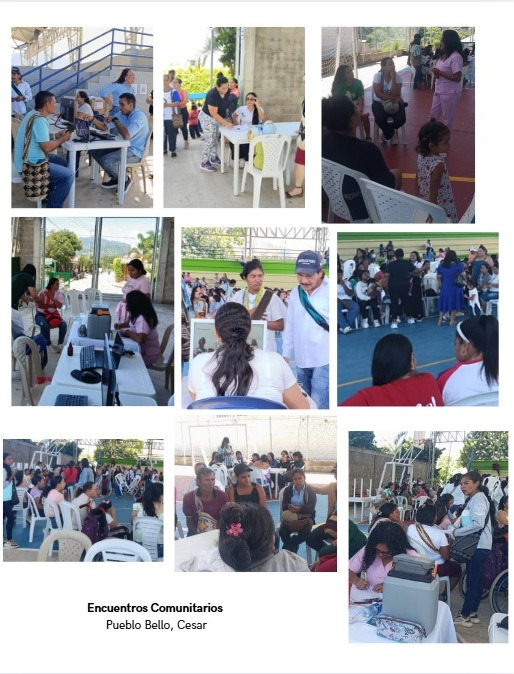
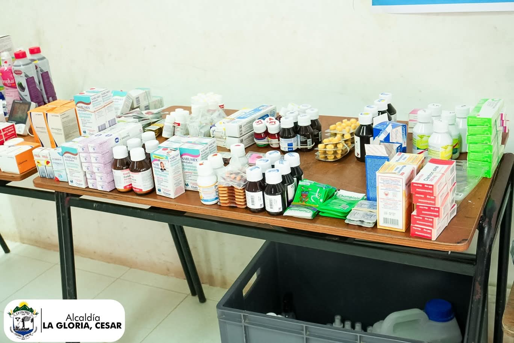
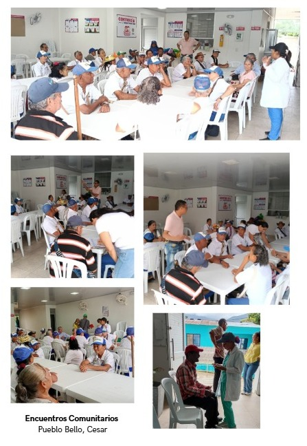
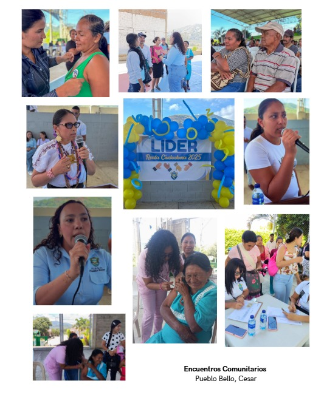
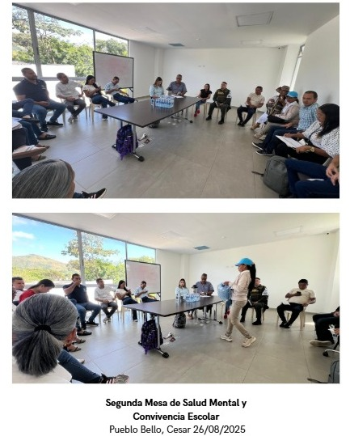
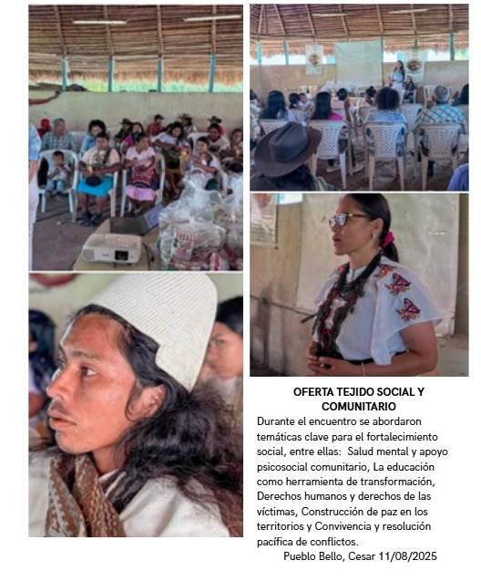
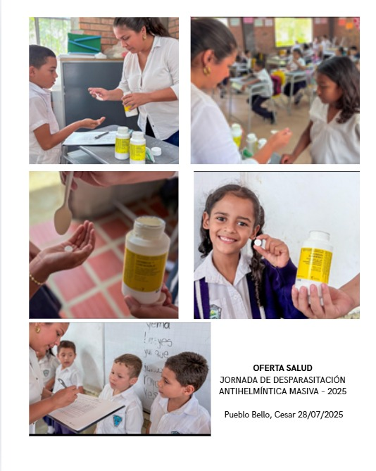
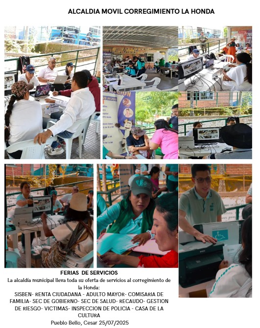
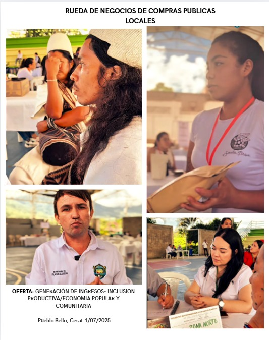
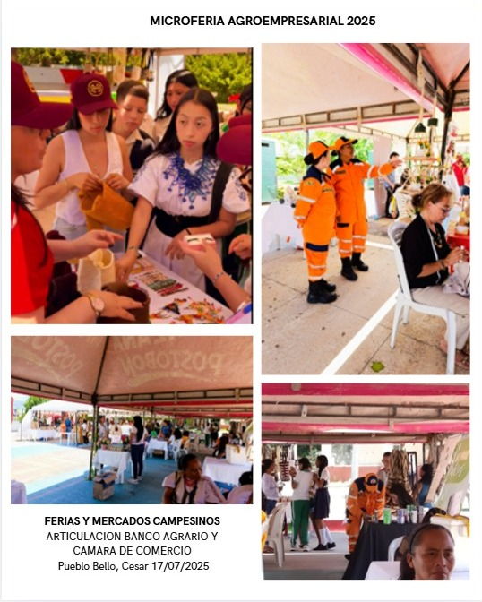

Centro de Ayuda
Inicio
Inicio
Plan comunitario
Actividades Comunitarias
Historias de Cambio
ABC del Componente Social y Comunitario
Red de Líderes
Guias y Materiales de Apoyo
Historias de Cambio
Testimonios y evidencias que muestran el impacto de las iniciativas comunitarias.
Testimonios en video
Tu navegador no soporta video.
Encuentro Comunitario(Valledupar)
Tu navegador no soporta video.
Encuentro Comunitario(Valledupar)
Evidencias en imágenes









